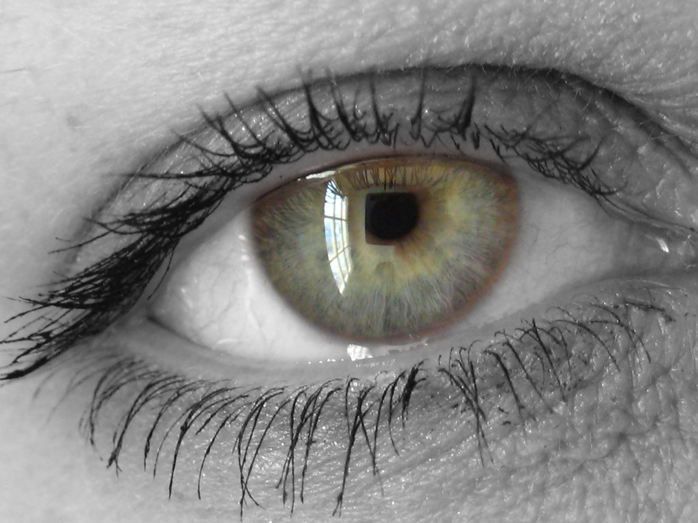

In the "Matrix experiment", participants were given easy math problems to solve in 5 minutes. When the time was up, they put the worksheets into a shredder and informed the examiners how many they got correct. They recived money corresponding to how many they were able to solve.
The twist is this: the shredder wasn't really a shredder. The examiners used a fake shredder to record how many the examinees actually got correct. The results are quite shocking; nearly 70% of participants lied to get more money. Usually honest, ordinary people like us, used lies to their advantage.
Lying may seem evil and bad, but the truth is that a lot of us would lie for our advantage if we thought nobody would find out.
So, what factors make us more likely to tell a lie, and most importantly, for what reasons do we lie?
Self centered lies are lies that are told for the liar he/herself. Source: Paul Ekman Group
"Self-centered eye...""Self-centered eye..." by Pahz is marked with CC BY-NC 2.0.
Some lie that a situation they have caused is not their fault.
Example: I'm sorry I'm late to class, the train was delayed!
Some lie to prevent something bad from happening to them.
Example: A child home alone telling a stranger their parents are asleep as an excuse to not let them in
Some lie to keep a secret from someone.
Example: A teenager not telling their parents about their school life
Some, especially children like to lie to their parents or peers just for fun.
Example: A child telling another to look in one direction because there's a UFO there
Some give out fake news or limit information to manipulate the target's thought patterns.
Example: Hitler spreading fake information that Jewish people are ruining the country's economy
"Individual Protection" by Martin Gommel is marked with CC BY-NC 2.0.
Some lie to not make another person feel bad or embarassed.
Example: Telling a friend their haircut looks great when it looks awful
Some lie to avoid someone they care about from being punished.
Example: Fake testimonies
As illustrated in the Matrix Experiment, we are more prone to lying when we think we won't get punished or noticed of our lie. This is because we do no see the consequences of the lie, so we do not care as much.
I believe this is also shown on the internet. We lie on the internet more because if the people behind the screen watching don't know us, they can't tell if we're being truthful or not at all. We can also say the true feelings we can't say to people we know in real life because there are no consequences of saying the truth on the internet at all.
When a fellow student, coworker or someone we are similar to lies, that sets the norm that lying is acceptable, making us more prone to lying. We think that the lie can be justified, so we think that we can lie.
We humans are very complex beings, and with our power of socialization, we can make up a new reality with lies. There are numerous reasons for one to lie, and sometimes lying can be necessary, or even the best option depending on the situation.
“Why Do People Lie?” Paul Ekman Group, 13 Apr. 2022, https://www.paulekman.com/blog/why-do-people-lie-motives/.